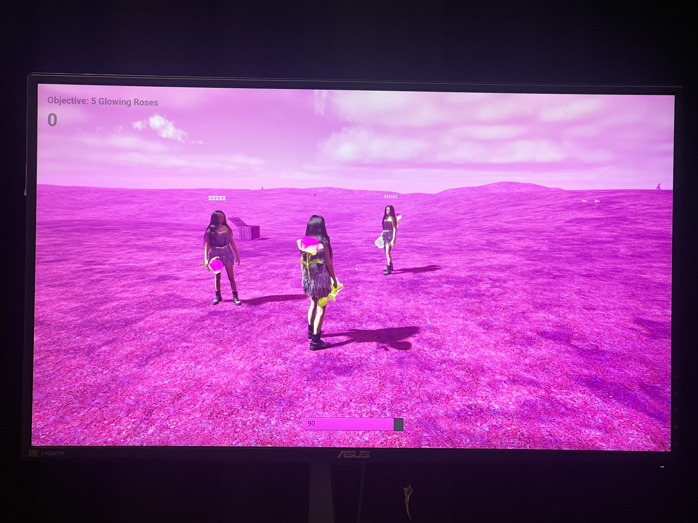
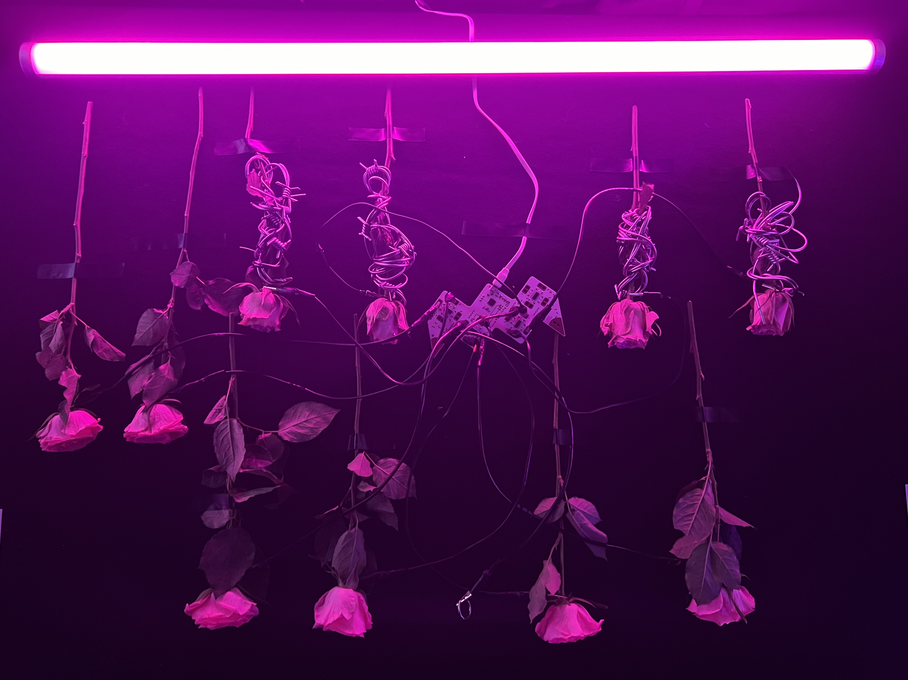
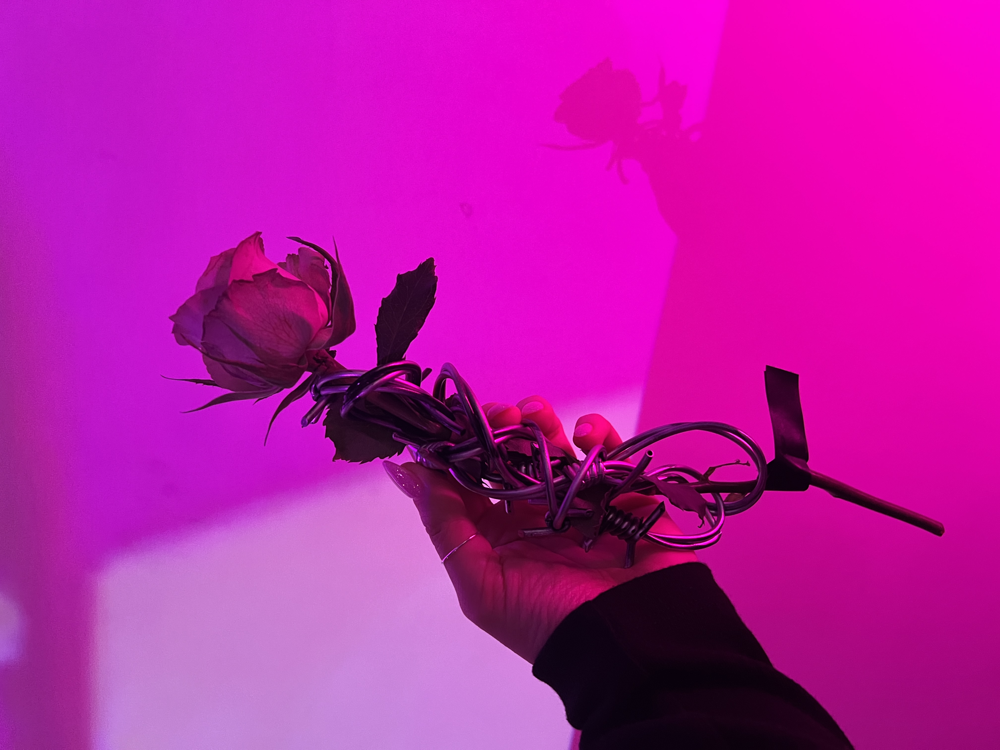
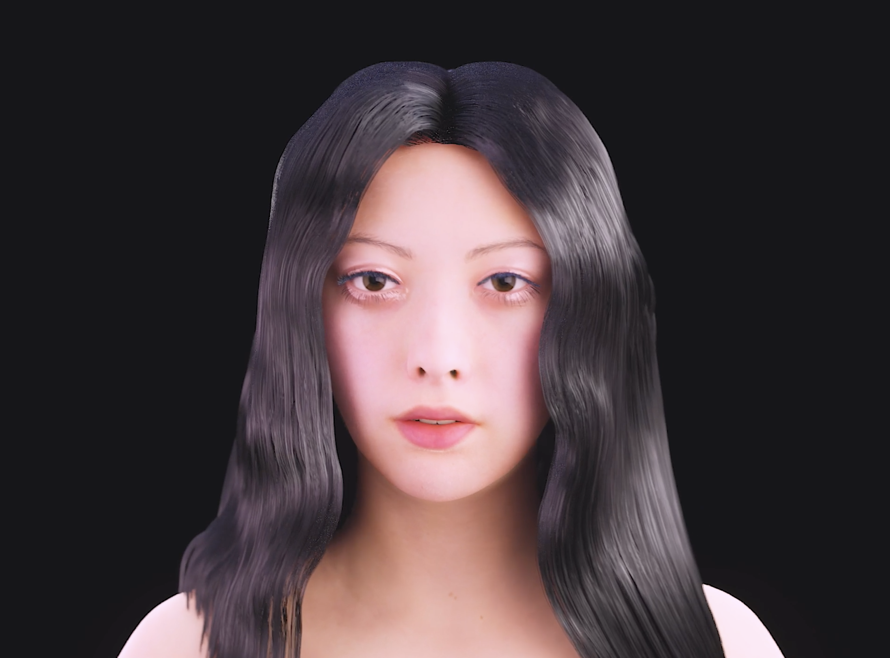
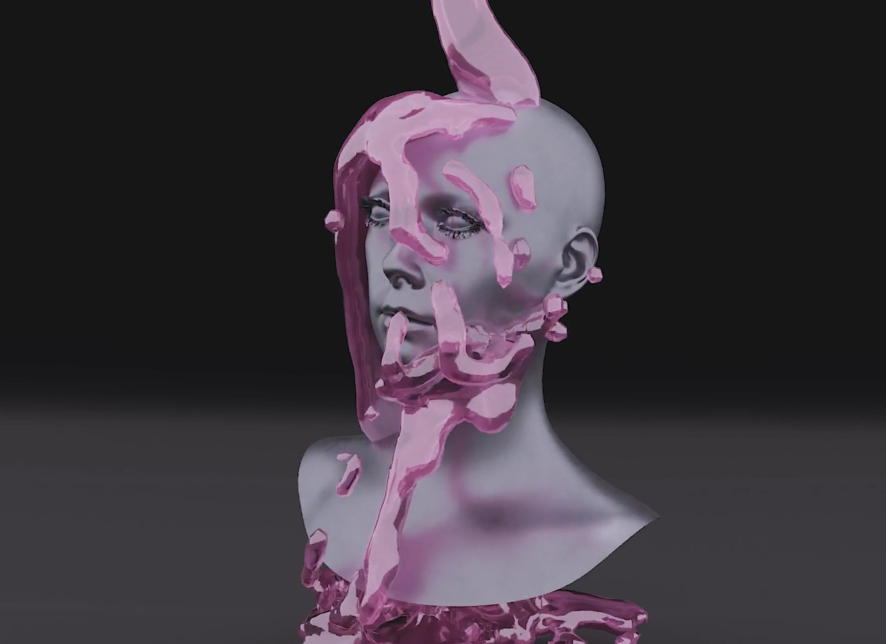
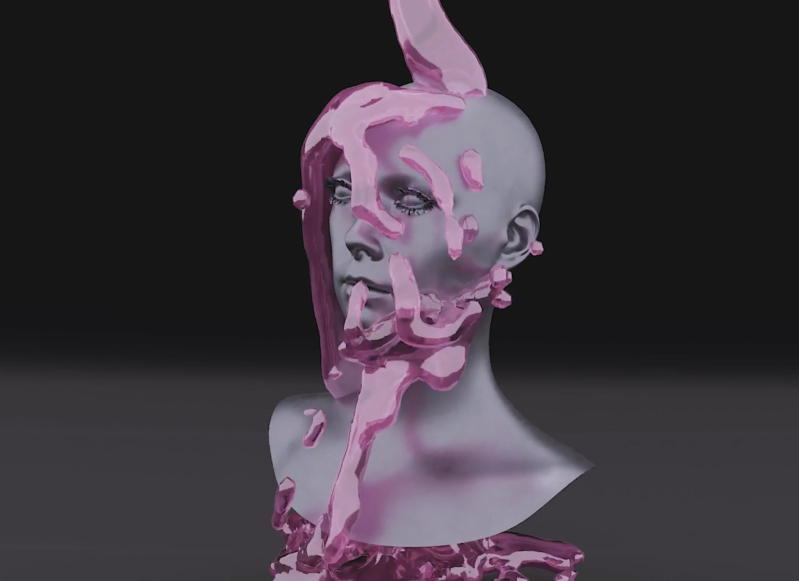
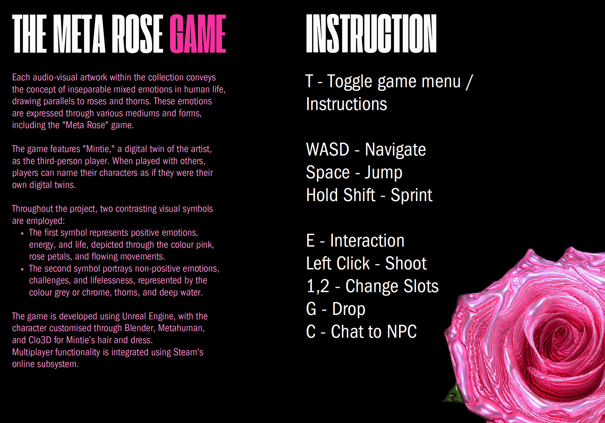
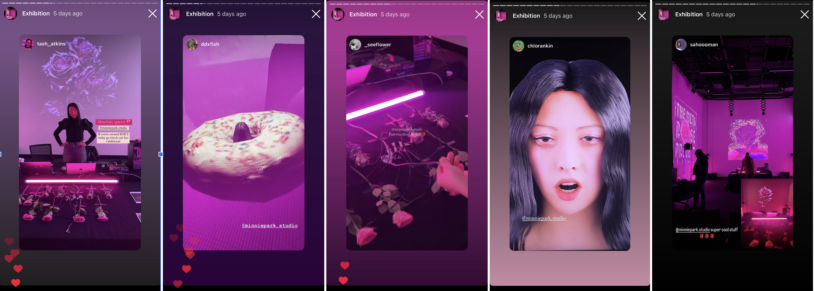

WEEK 13
0306 - 0906WORK PROGRESS
Finishing Touches & Exhibition Preparation

The Meta Rose Game:
After testing with others and confirming that it works, I wanted to ensure that it also functions in the Black Box with other computers. During testing, it was discovered that RMIT’s wifi is blocking the game from connecting to each other. Fortunately, it worked with hotspots. The only issue with hotspots was that when I used my phone, the signal was too weak in the Black Box, causing it to disconnect from the internet. After discussing with the technical team from the media department, I learned that Samsung phones have "wifi-sharing," which allows them to remain connected to wifi while sharing hotspots with other computers. This ensures a strong signal, and the computers are not blocked from connecting to each other since they share the same hotspot. I was relieved that this solution worked out.
I knew setting up the multiplayer game in the Black Box was going to be challenging, so I started packaging the game a few weeks ago to ensure I had enough time to troubleshoot and figure out how to solve all the problems. This was absolutely the right decision, considering how much troubleshooting I had to go through until today.
 
The Meta Rose Touch:
To enhance the visual connection between the thorns and the roses used for distortions, I ordered fake barbed wires from Amazon. While I considered getting flowers with real thorns, I ultimately decided against it due to safety concerns, as the audience would be touching them. In exploring options to express the thorns, I considered barbed wires, as they visually resembled thorns. While I initially thought about using real barbed wires, I reconsidered due to safety issues.
With the fake barbed wires made of plastic, I wrapped them around the roses, resulting in a realistic and visually appealing effect. This addition contributed to the overall visual aesthetics of the piece at the exhibition.
With the inclusion of the barbed wires, this piece was now complete and ready for showcase. I just needed to get roses on the day of the exhibition for setup. However, setting up takes some time, so I made sure to arrive at the Black Box early enough.



 

Music Video:
I was still rendering the face animation of Mintie this week. I completed the last part of the renderings on Wednesday night, which was then added as the final footage to the music video! The video utilises footage from 3D renders, recordings of the TouchDesigner interactive piece, as well as some other visuals created for the music video.
There is footage of Mintie’s torso in Chrome with pink liquid simulation created and rendered in Blender. This was to express the full exposure to the colour pink by showing Mintie’s face getting soaked by the pink fluid. The other footage of 3D roses was made in TouchDesigner using a point cloud system. The roses explode and form a hurricane, expressing inner turmoil and highlighting the change of the song as if it’s exploding.
The video is then edited, blending these footage with one another using different overlay effects in Premiere Pro. Since the music video utilises footage from other artworks, it truly becomes like a bridge connecting all other artworks as one. I’m glad how it turned out as a great bridge to connect everything together as one project under the same unified visual aesthetics.
The music video was designed with a screen ratio of 4:3 instead of 16:9. Several aspects were considered in deciding the screen ratio. Firstly, the fact that the TouchDesigner interactive piece was created in a 1:1 ratio, as a square. Therefore, with a 4:3 ratio, it is less cut off when enlarged compared to a 16:9 ratio, where the horizontal length is longer. Another aspect was related to the desire to create a unique visual aesthetic by deviating from the usual screen ratio. The 4:3 ratio also seems to be making a comeback and is used by some famous artists in their music videos, including Ariana Grande's "yes, and?".

Exhibition Preparation:
For the exhibition, I created a floor plan for the setup, which includes five tables, sixteen chairs, and several bean bags at the back. I also made a Google Drive folder for the exhibition containing files to print, didactic texts, and files to put into the computers and projectors.
The guest list is printed and placed near the entrance for the audience to sign in. This helps keep track of the number of attendees.
There are two types of didactic texts: one for the entrance of the exhibition, inviting any passing audience members in, and another for the screen inside the exhibition, which includes QR codes linking to the project description, feedback form, and Instagram account.
Instructions for interacting with each of the artworks are printed and placed on each of the desks.
SOCIAL MEDIA

Thankfully, many stories featuring the exhibition were shared, so I created a highlight for all the stories shared. These are some screenshots from the stories shared by the audience, which I then reshared on my account.